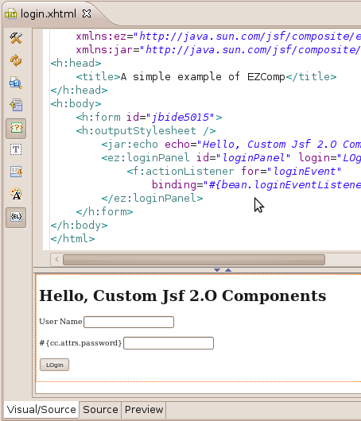
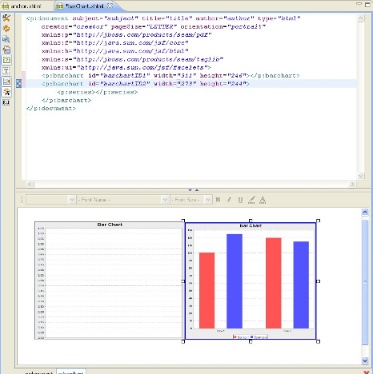
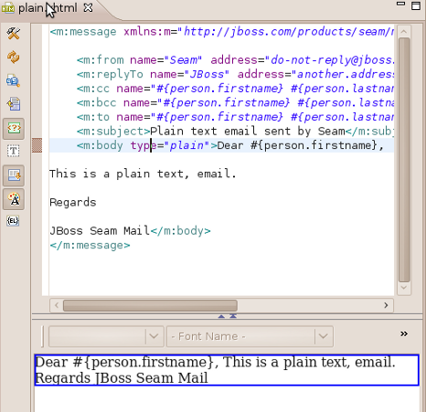
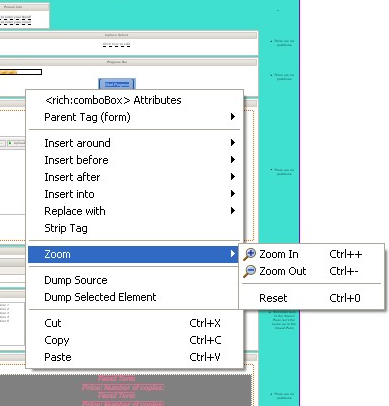
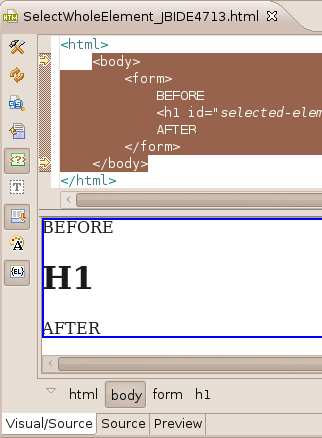
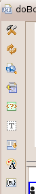

General
|
| XULRunner 1.9 |
Visual Editor is now based on Mozilla Xulrunner 1.9.1.2
This means better performance, a lot of bugfixes
and greater portability allowing us to
support more platforms in the future.
Related
Jira
|
|
| Visual Page Editor on OSX Cocoa 32-bit |
Visual Editor is available on OS X (Snow Leopard) Cocoa 32-bit version.
Related
Jira
|
JSF2 Composite UI Components Support
|
| Composite
UI Component Rendering |
Visual Editor can now render Composite UI components from classpath
and Web root 'resources' folder.
It also supports rendering for parameters in custom tags.

Related Jira
|
|
|
JSF 2.0 attributes |
Support for JSF 2.0 attributes has been
added to VPE. VPE processes attributes for
jsf 2 custom tags.
Related Jira
|
Facelets
|
| Facelets
taglib import to Palette |
Now Facelets taglib can be imported to Palette View
Related Jira
|
Templates
|
|
Seam PDF tags |
Seam PDF tags support has been added to VPE

Related Jira
|
|
|
Seam Mail tags |
Seam mail tags support has been added to VPE

Related Jira
|
|
Editor
|
| Zoom |
You can now zoom in and out out the visual page
editor via the shortcut menu or keyboard shortcuts
(see screenshot).

Related Jira
|
|
| Selection
bar |
The children tags now continue to be available in the selection bar when you have selected parent. Allowing you to iterate back and forth in the hiearchy.

Related Jira
|
|
|
Memory usage |
A memory leak were identified and fixed so now the VPE uses much less memory when opening/closing many files.
Related Jira
|
|
| Internal
toolbar |
Visual editor toolbar have been redesigned so it
now has new icons and three new buttons:
- Show/hide none-visual tags
- Show/hide text formatting toolbar
- Show/hide selection bar

Related jira: 1, 2
|